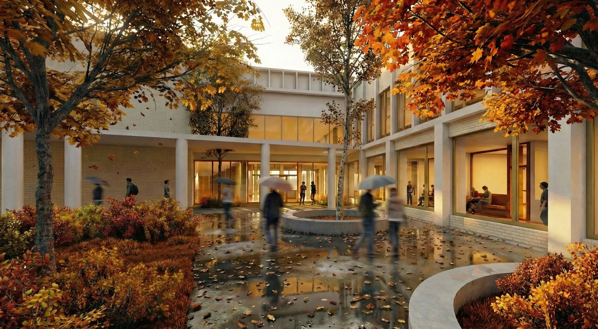
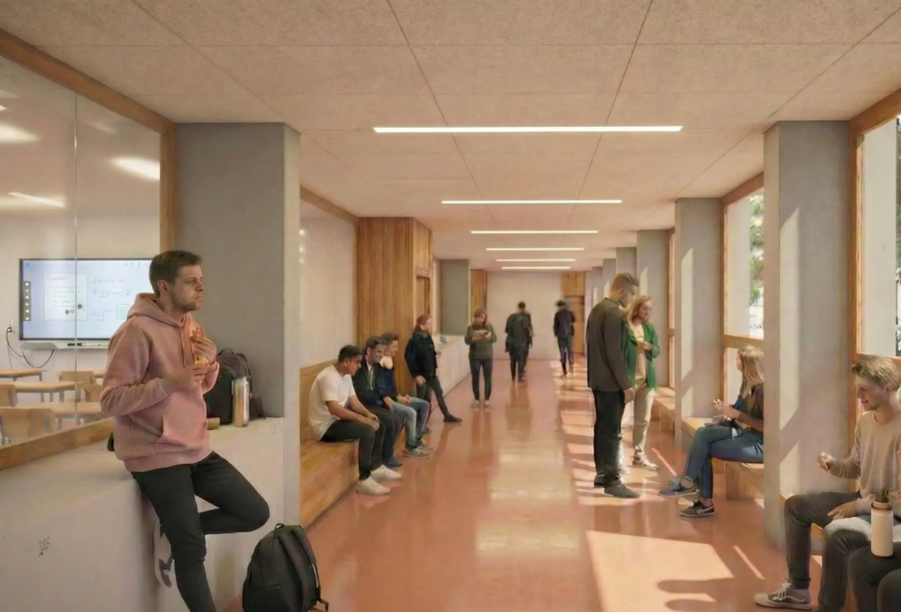
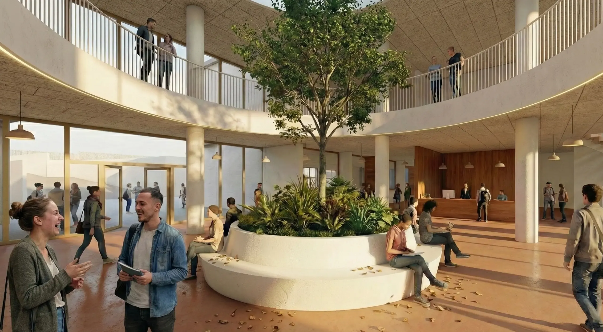
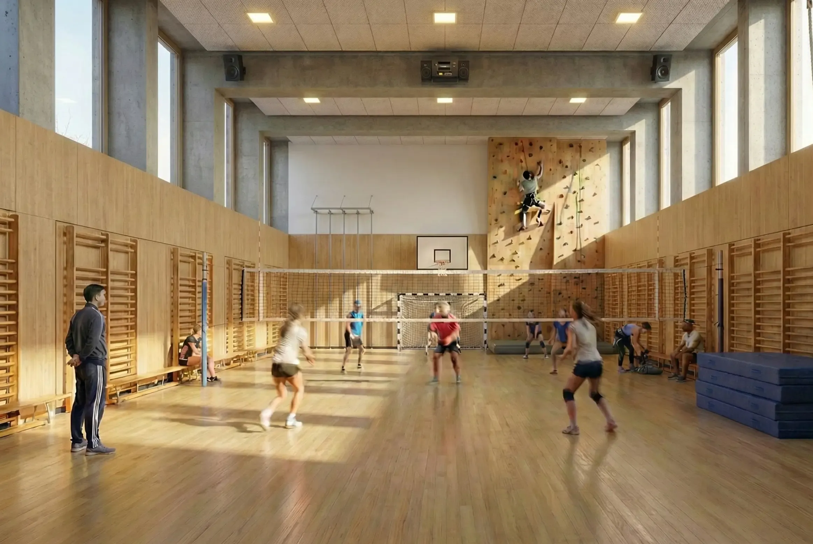
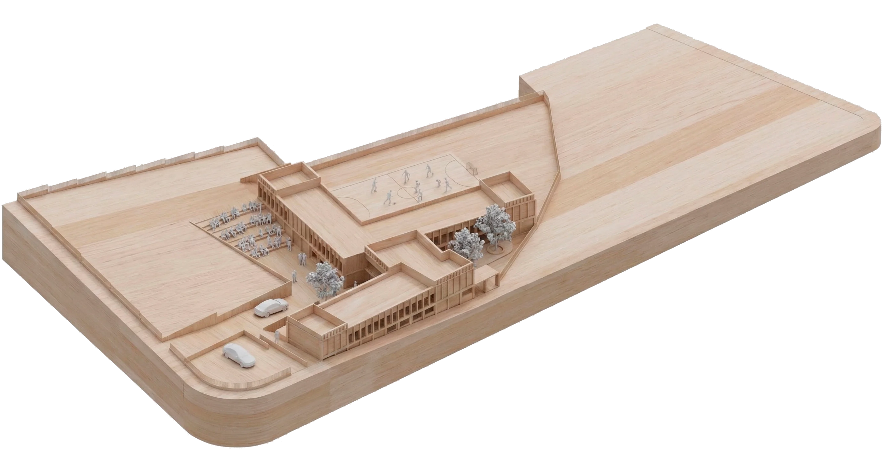
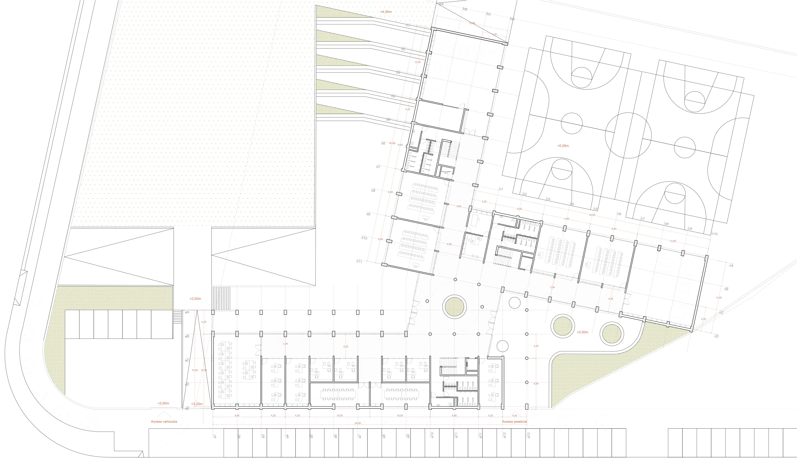
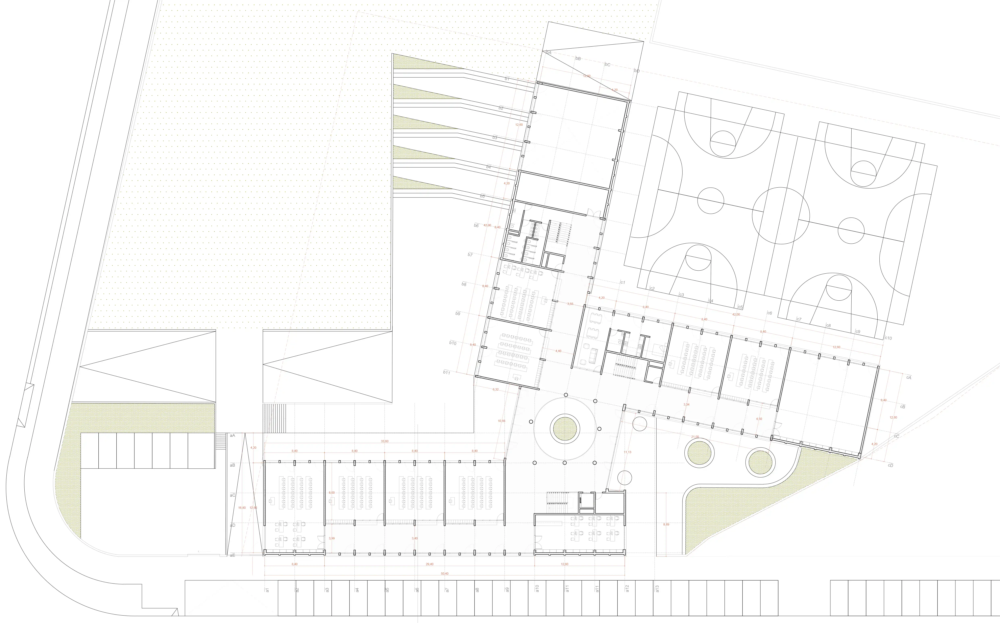
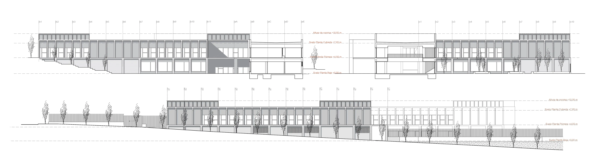

Propuesta para el concurso de un nuevo edificio de formación profesional en Tudela, con una superficie de 3.500 m² distribuidos en dos plantas. El proyecto plantea un volumen compacto que se adapta al desnivel del terreno, organizando los espacios educativos en torno a un atrio central a doble altura que actúa como corazón del edificio. La propuesta integra un polideportivo semienterrado, aulas taller y espacios comunes diseñados para fomentar la interacción entre los ciclos formativos.








